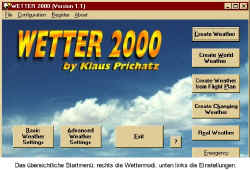

WETTER
2000
von Klaus Prichatz
getestet von André Niedhöfer
Wetter 2000 von Klaus Prichatz ist
die für den FS2000 überarbeitete
Version von Wetter, mit dem in den
"guten alten Zeiten" des
FS98 viele Wettereinstellungen
möglich gemacht wurden, die es so
nicht gab. Der größte Effekt war die
Implementierung von METAR-Dateien aus
dem Internet, die von Wetterstationen
auf der gesamten Erde zur Verfügung
gestellt wurden. Damit war es
möglich, das reale Wetter etwas
zeitversetzt im FS darzustellen. Auch
die Darstellung von Schneefall war mit
Wetter möglich.
Mit dem FS2000 sind diese Optionen nun
eigentlich jedem bekannt, kann man
sich doch ins Internet einklinken und
ebenfalls das reale Wetter für ein
größeres Gebiet runterladen. Auch
Wetteroptionen wie Regen und Schnee
sind möglich. Wozu braucht man also
noch so ein Programm wie Wetter?
Hmm...Gute Frage! Ich versuche nun im
folgenden die Möglichkeiten von
Wetter 2000 zu hinterleuchten.
Installation
Durch die automatische
Installationsroute ist das
Installieren einfach und schnell.
Einzig den FS2000-Ordner muss man
eingeben, weil das Programm dorthin
die fsuipc.dll kopiert. Diese
Programmbibliothek wird von Wetter
2000 unbedingt benötigt. Eigentlich
kann man aber gar keine Fehler bei der
Installation machen. Schön ist auch,
dass man zwischen deutscher und
englischer Hilfedatei wählen kann.
Das Programm ist nämlich in Englisch
und so ist die übersetzte Hilfe für
sprachlich nicht sie ganz versierte
Simmer von Vorteil. Der Wetter
2000-Ordner benötigt übrigens nur
3,9 MB Speicherplatz.

Wettereinstellungen
Startet man Wetter, öffnet sich
ein einfaches, klar strukturiertes
Menüfenster. Dies ist die
Kommandozentrale für die
Wettererzeugung. Unter der
Schaltfläche Basic Weather Settings
verbergen sich im großen und ganzen
die gleichen Optionsmenüs wie im
Wettergenerator des FS. Hier kann man
die Tages- und Jahreszeit, die grobe
Sichtweite, Wind, Turbulenzen und
Wolkenbildung einstellen. Zusätzlich
kann man zwischen dem metrischen und
US-Höhensystem wählen und die
Blitzhäufigkeit bestimmen. Alle
Einstellungen lassen für das Programm
bestimmte Toleranzbereiche übrig, in
denen sich dann das Wetter abspielt.
Die Advanced Weather Settings
beinhalten drei weitere tiefgehendere
Einstellungen. Hier kommt ein neues
Feature für den FS zum Tragen, denn
Wetter 2000 kann während des Fluges
auch meteorologische Veränderungen
generieren. Zum Einen lässt sich hier
einstellen, ob sich das Wetter
während eines Fluges eher behäbig
oder plötzlich ändert, zum anderen
kann die Häufigkeit eben dieser
Änderungen bestimmt werden. Somit
lassen sich Flüge durch ganze
Wetterfronten simulieren. Hier kann
auch die minimale Sichtweite, also die
Grenze für die Wetterveränderungen
ausgewählt werden.

Die Wettermodi
Insgesamt gibt es fünf Optionen
der Wettererzeugung. Create Weather
beinhaltet die Auswahl von Start- und
Zielflughafen aus einer Liste aller
FS2000-Flughäfen. Im Bereich zwischen
diesen ausgewählten Flughäfen wird
dann das vorher ausgewählte Wetter
generiert. Diese Informationen werden
in einer Datei mit dem Namen
wetter.flt abgespeichert, die dann im
FS2000 im Menü "Flug
auswählen" erscheint.
Zusätzlich kann man die Position der
Startpunkte mittels Koordinaten
ändern, um z.b. den Stellplatz des
Flugzeuges zu bestimmen.

Mit der Schaltfläche Create World
Weather kann man spezifisches Wetter
für einzelne Kontinente der Erde oder
selbst gewählte Regionen generieren.
Dies geschieht mittels Auswahl bzw.
Koordinateneintrag des Gebietes und
das Programm generiert für dieses
Areal standardisierte
Wetterbedingungen. Aufgrund der
großen Datenmenge kann dies aber je
nach Größe des zu bearbeitenden
Gebietes fünf Minuten und länger
dauern. Auch diese Informationen
werden in der wetter.flt
abgespeichert.

Hat man mithilfe des FS2000 oder
anderer Flugplanungsprogramme schon
einen Flugplan erstellt, kann man für
diesen ebenfalls das Wetter
generieren. Dazu wählt man die
Schaltfläche Create Weather from
Flight Plan und sucht seinen
abgespeicherten Plan aus.

Der Modus Create Changing Weather
beinhaltet die oben schon erwähnte
Option der sich verändernden
Wetterbedingungen. Dabei bleibt Wetter
2000 im Hintergrund und generiert
während des Fliegens das wechselhafte
Wetter. Dabei werden wie gesagt die im
Advanced Weather Setting vorhandenen
Eingaben berücksichtigt.

Der letzte Wettermodus Real Weather
beinhaltet die Benutzung von
vordefinierten und in htm-, rft-, oder
rwx-Dateien abgespeicherten
Wetterdaten. Diese können aus dem
Internet heruntergeladen werden. Da
die Wetterdaten mit ICAO-Codes
verbunden sind, muss man nun die
richtigen Stationen heraussuchen, die
für den Flug gebraucht werden. Neben
den Start- und Ankunftsflughafen
könne dies aber auch
Zwischenstationen sein. Dies ist
insofern wichtig, als dass so ein
weicher Übergang zwischen den
Wetterzonen erfolgt. Die Daten werden
ebenfalls in wetter.flt gespeichert
und könne über "Flug
auswählen" im FS2000 abgerufen
werden.

Praxis
In der Anwendung der ganzen
Einstellung trennt sich die Spreu vom
Weizen, besser gesagt die schwachen
von den ausgereiften Programminhalten.
Der normale Wettermodus bietet nicht
die Einstellmöglichkeiten wie das
Fortgeschrittenen-Wettermenü des
FS2000, die Einstellungen sind einfach
viel zu grob gestaltet. Vor allem für
den realismusorientierten PC-Flieger
ist das FS2000-Menü besser zu
gebrauchen. Die regionenspezifische
Wetteroption dagegen ist echt gut
gelungen. Nun lassen sich für alle
Areale der Erde generalisierte
Wetterbedingungen definieren, ohne
ständig ins Wettermenü des FS zu
gehen. Auch das sich wechselnde Wetter
ist eine weitere gut gelungene Option
von Wetter 2000, mit der man dem
Realismus noch ein Stück näher
gekommen ist. Dem realen Wetter stehe
ich auch zweigespalten gegenüber.
Negativ ist erst mal, dass man sich
die Dateien selber runterladen, bzw.
erst mal die richtigen Dateien finden
muss. Dann soll man auch noch die
richtigen Daten aus der Datei
raussuchen. Hier macht der FS2000 vor,
wie es eigentlich gehen sollte: nur
Gebiet aussuchen - den Rest macht der
FS selber. Das ist einfach viel
komfortabler und zeitsparender.
Zugutehalten muss man aber Wetter2000,
dass man mit dem Programm einen
größeren Bereich abdecken kann, und
auch nur seine Flugroute mit den Daten
versehen kann, während der FS2000 nur
ein kleineres Gebiet mit realen
Wetterdaten speist.

Mit diesem Programm ist es
eigentlich wie mit jedem anderen,
welches FS-eigene Programminhalte
ergänzen oder gar ersetzen will. Man
muss einfach einen Kompromiss finden
zwischen einfacher Bedienung aber
tiefgehenden Auswahlmöglichkeiten.
Wie schon angesprochen wird dieses
Problem hier bei den normalen
Einstellungen deutlich. Ganz ersetzen
kann Wetter 2000 den FS-Wettermodus
mit Sicherheit nicht - nur ergänzen.
Doch alles in allem hat das Programm
sehr gute Inhalte. Was dem einen Modus
fehlt, wird mit den anderen wieder
wettgemacht. Wer die Optionen mal
selber ausprobieren will, sollte sich
auf jeden Fall die Shareware-Version
runterladen. Diese ist zwar in ihrem
Funktionsumfang, aber nicht zeitlich begrenzt.
Genaueres Hinsehen ist also möglich.
Ich werde Wetter 2000, vor allem die
Changing Weather-Option auf jeden Fall
weiterbenutzen.
André Niedhöfer
haupt-niedhoefer@t-online.de
08. April 2000
|


{kind=link}
{kind=link}